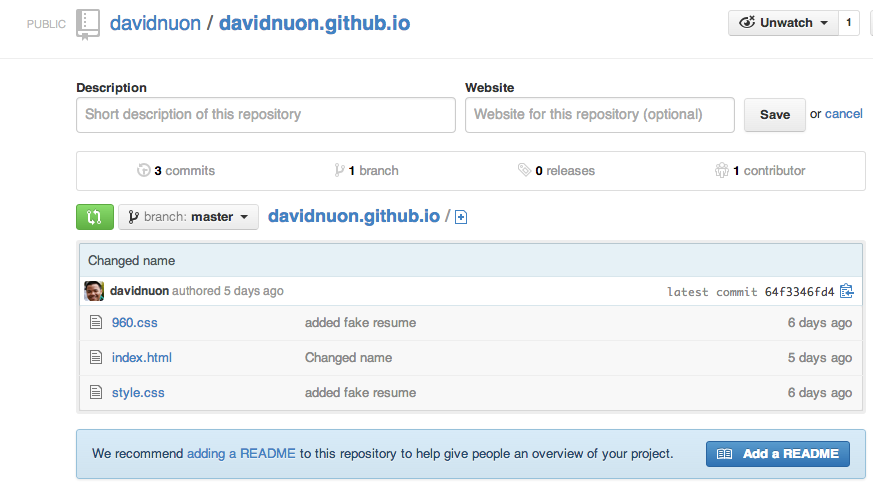

Let's set some stuff up
Make a new repository for username.github.io

Configure your identity
git config --global user.name "Some Dude"
git config --global user.email "me@here.com"
Let's make a folder for our code repositories
cd ~
mkdir repos
cd repos
Clone your repository and go into it
git clone https://github.com/username/username.github.io.git
cd username.github.io
Get sample files
curl csulbacm.github.io/acm-star-gitworkshop/resume | sh
View files in file manager
explorer . # Windows
open . # OS X
Push it to GitHib
git add .
git commit -m "First commit"
git push origin master